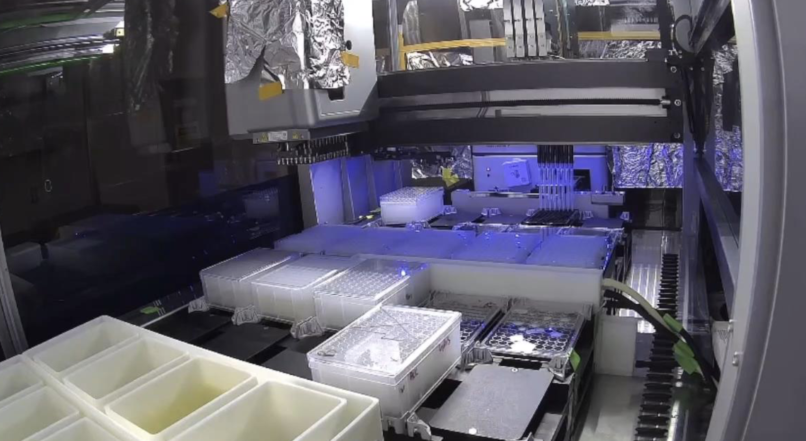
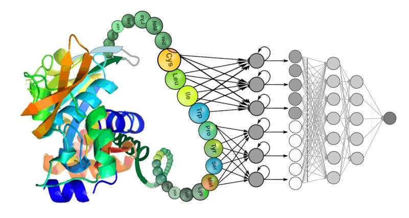

Selected Experiences
Tetsuwan Scientific

Helped building AI-scientist to automate life science research in an 8-person startup team. I automated the bacterial trasnformation protocol, Nanopore sequencing pipeline, and colony picking through integrating 3D printed custom tools with liquid handler robots and developing computer vision approaches. I also contributed to the first lab automation community wikipedia page.
Lab Auto WikiChory Lab
Applying robotics-aided directed evolution to study and engineer chromatin binding proteins. I worked on bacterial transformations, contributed to PyLabRobot (PLR), and automated plenty assays on robot, advancing the field of automated protein engineering and synthetic biology.
Barrett Lab

I worked at the Barrett lab throughout the summer at Broad and Harvard through the Harvard Stem Cell Institute Internship. I utilized iPSC-derived neural progenitor cells to study Down Syndrome-specific morphology, conducted Cell Painting Assay, and applied machine learning to extract key traits related to DS, reaching 83% prediction accuracy.
HSURV Abstract Book pg. 44Navid Lab
I formulated a primal-dual constraint learning problem to tackle protein pathogenicity prediction. To achieve the desired outcome, I fine-tuned ESM2 models with PEFT LoRA and constraint relaxation to improve results by 5%. We are currently preparing the manuscript for submission.
Musah Lab

My lab implements an innovative way to engineer functional podocyte cells using human iPSCs. Using them as models to study Chronic Kidney Disease (CKD), I identified 6 important genetic pathways related to podocyte injury from scRNA-seq data that may serve as treatment targets for CKD.
Apple
Working with the data team at Apple Greater China, I constructed a Prophet-based ML model to predict 15-week Mac sales, improving MAPE by 56%. I performed feature engineering with Pandas and tested Lightgbm model to predict weekly iPhone sales. Successfully incorporated the final Prophet model into the data team's prediction workflow.